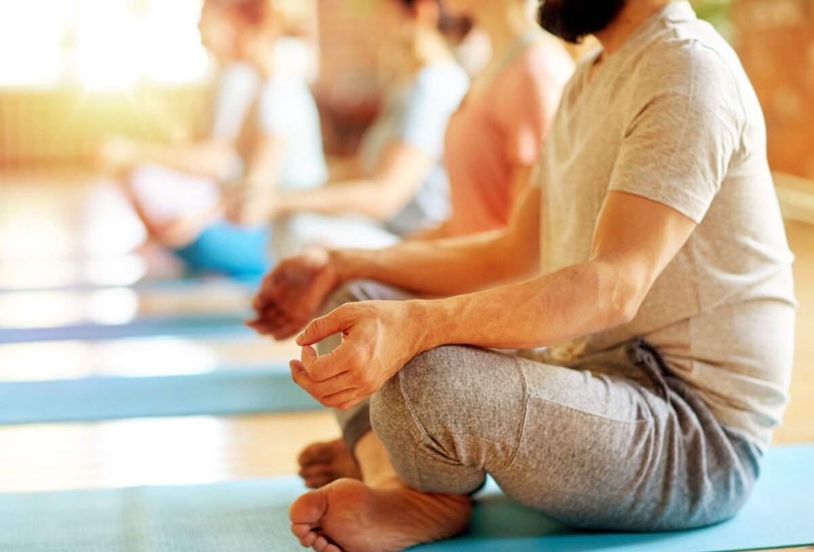
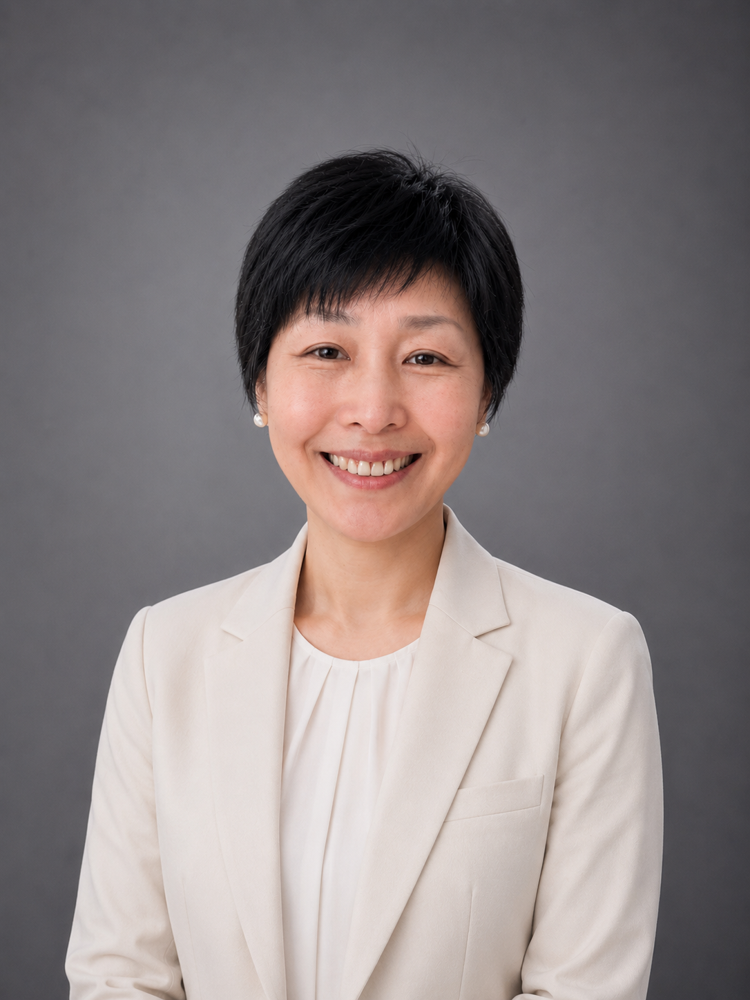
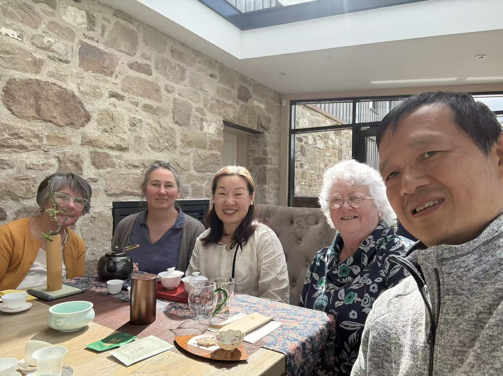
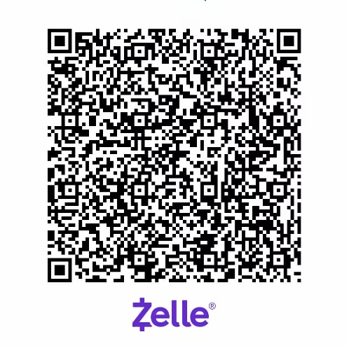

徐春艳（Cherry）
联合创始人
拥有二十年北京 211 大学教学经验，访学于美国杜克大学。自 12 年前起长期修习静坐冥想、呼吸法，逐步系统学习拍打、刮痧、针灸等传统中医技艺，为省级非遗叶氏心法针灸传承人、道医扁鹊导引按跷术传承人。深耕身心同调、传统导引与针灸疗法，探索教育成长与东方康养的整合实践。


团队介绍
联合创始人
拥有二十年北京 211 大学教学经验，访学于美国杜克大学。自 12 年前起长期修习静坐冥想、呼吸法，逐步系统学习拍打、刮痧、针灸等传统中医技艺，为省级非遗叶氏心法针灸传承人、道医扁鹊导引按跷术传承人。深耕身心同调、传统导引与针灸疗法，探索教育成长与东方康养的整合实践。

联合创始人
实践身心灵成长疗愈，分享简单实用有效的理念、方法和工具，帮助需要的人找回本性具足的自己，活出光、能量、丰盛。自 2024 年 6 月有缘遇见并坚持练习三焦养生茶道，有效改善和修复了长年困扰自己的慢性脊椎疾患，彻底改变了生命状态。发愿随缘传播三焦养生茶道，帮助苦苦寻医问药的人，把身心健康和觉知的主动权拿回到自己手里，活出鲜活绽放的生命。
三焦养生茶道
王建平老师的大愿心：让一亿人用三焦养生茶道爱自己，活到茶寿，无疾而终。
王建平老师结合了现代人的生活习惯，结合了他对气的运行的认知、对中医的了解、对人体经脉循行的认知，最重要的，结合了古人和他自己对茶的认知。他把所有学到的东西，像炼丹一样，经过半年的时间，创造了这套三焦养生茶道。
教大家学会茶的能量在身体里运行带来的美妙体验，加上喝他专门调配的三焦养生茶，重建自己身体的觉知系统。喝一口茶，能量到脚底，脚底发热，脚趾尖酥酥麻麻——真实不虚的体验。
学员见证
我想分享一些我们收到的美好反馈：

“与 Cassie 和我们的小组一起学习中国书法的文化与艺术，是一段非常愉悦的体验。在参加三焦茶道之后，我感到身心都焕然一新。它远远不只是喝茶而已。”— Joan
“我非常喜欢 Cassie 的书法课程。除了学习书法技巧之外，如果你愿意深入探索，Cassie 还会带你了解书法背后的历史与精神内涵。她是一位非常优秀的老师。课程中带有一种正念与冥想的元素，而这正是我特别享受的部分。”— Natasha
“这是我第二次参加茶道课程。Michael 是一位温和的老师，他不仅细致地为我们讲解，也让整个过程充满乐趣。昨天加入的太极体验，将会永远留存在我的心灵深处。离开 Starlight 时，我感到自己更加扎根于当下，内心敞开而充满温暖。”— Natasha
“这是一个令人非常安定、沉静的课程。Cassie 对她的艺术怀有深深的热爱。她以优雅的方式带领我们进入整个体验，并给予温柔的支持，帮助我更好地理解其中的内涵。”— Donna
“三焦茶道令人愉悦、放松，有时也会让人情绪触动。过程中，我会感到身体忽冷忽热，更有能量；而有时在冥想之后，又会感到非常困倦。一种宁静而平和的感觉。”— Margaret
线下活动
这里可以放 Calendly、Google Form、Microsoft Form 或微信群报名方式。
捐赠支持
我们诚挚感谢每一份捐助。无论金额大小，您的慷慨支持都将直接用于以下两个方面：
Zelle：扫描二维码即可捐赠。
支票（Pay by Check）：
The One Wellness Workshop 为 501(c)(3) 免税非营利组织（EIN：99-1560868），您的捐赠可在法律允许的范围内抵税。
联系我们